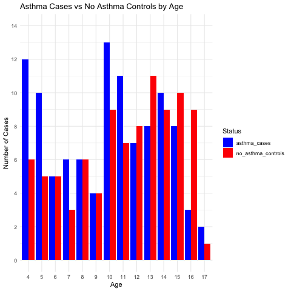

Biases
It is helpful to consider biases in observational studies according to the following grouping
- selection
- misinformation
- confounding
Selection bias
Selection bias is a distortion in the measure of association due to a sample selection such the measured association is not representative of what exists in the target population.
After identification of the research question, the next step is to distinguish among the various populations, including the
- target population (all children in the UK)
- study population (all those with a chance of being in the study, ie the 1500 children who completed the original questionnaire)
- sample population (the 200 children in Figure 1)
- analyzed sample population (the 90 matched pairs of children)
In their previous work, the authors report an asthma prevalence of approximately 20%, or about 300 children based on their study population of 1500. The following questions need answering.
- Does the study population (?1500) reflect the target population?
- Do the 200 sample children reflect the total study population ?
- Do the 90 matched pairs, the analytical sample population reflect the overall sample population? What about the missing cases?
Many reasons to be concerned about possible selection bias in this study.
Let’s begin by examining their Figure 1 which is reproduced below.

How many asthma cases (and controls) did they identify in this Figure?
The figure shows 105 cases and 93 controls, a total of 198 children. Yet the authors claim this figure shows the age distribution of 200 children. While the difference is small, it does raise further concerns about the reliability of their data analysis when there is a discordance in a simple counting of individuals.
Why do they only use 90 cases? Presumably to meet their matching criteria, age (+/- 1 year). Below is the best matching I could create from their data.

The question then becomes why match?
Most people think matching is to control for confounding but this is only partly true (and indeed may be more than offset by potential selection bias) and the best reason is to improve precision in situations of sparse data.
Moreover, in this case a better alternative would have been not to match but to control for age in regression analysis as this would have allowed an estimation of the effect of age on the detection of asthma, while using the whole study sample of 198 children, including all 105 cases.
Performing logistic regression glm(stat~ages, data = data_long_uncount, family = "binomial") shows that each year of additional age is associated with a odds ration decrease in asthma diagnosis = OR = 0.92, 95%CI 0.89 - 0.96
Misclassification
The authors don’t report the raw data for the endotoxin exposure but assuming the following distribution among cases and controls gives an OR that approximates their results
## --Observed data--
## Outcome: Exposed+
## Comparing: Cases vs. Controls
##
## Cases Controls
## Exposed+ 40 50
## Exposed- 27 63
##
## 2.5% 97.5%
## Observed Relative Risk: 1.3 1.0 1.8
## Observed Odds Ratio: 1.9 1.0 3.4
## ---
##
## Misclassification Bias Corrected Relative Risk: 1.3
## Misclassification Bias Corrected Odds Ratio: 1.9As the authors report from their previous work that their asthma detection questionnaire has only a 70% sensitivity and 91% specificity misclassification is present.
The effect of misclassification can be quantified using quantitative bias analysis (QBA) via the episensr package and misclassification function. This seems an improvement over purely qualitative heuristics, such as “non-differential misclassification biases toward the null”.
library(episensr)
misclassification(matrix(c(40, 50, 27, 63),
dimnames = list(c("Exposed+", "Exposed-"), c("Cases", "Controls")),
nrow = 2, byrow = TRUE),
type = "outcome",
bias_parms = c(.70,.70,.91,.91))## --Observed data--
## Outcome: Exposed+
## Comparing: Cases vs. Controls
##
## Cases Controls
## Exposed+ 40 50
## Exposed- 27 63
##
## 2.5% 97.5%
## Observed Relative Risk: 1.3 1.0 1.8
## Observed Odds Ratio: 1.9 1.0 3.4
## ---
##
## Misclassification Bias Corrected Relative Risk: 1.4
## Misclassification Bias Corrected Odds Ratio: 3.6Conceptually, this misclassification of cases and controls suggest any association between indoor air pollutants and asthma will likely be underestimated and this analysis permits an estimate of the order of magnitude.
Confounding
How much residual or unmeasured confounding would be required to wipe out the observed effect? This can be determined using the EValue package as described in this paper.
## point lower upper
## RR 1.4 1.1 1.8
## E-values 2.1 1.3 NAThis suggests that a moderate confounder with a risk of 2.1 fold to exposure and a 2.1 fold increase in the outcome would be required to eliminate the observed risk. Of course if the true OR is greater due to misclassification bias the size of unmeasured confounder needed to eradicate the observed association would be even larger.
In conclusion, there are multiple potential biases (selection, misclassification and confounding) associated with this study. Unmeasured confounding is unlikely to explain the observed association and misclassification suggest the association may be underestimated, but the inability to evaluate the magnitude and direction of the selection bias limits definitive determination of the overall direction of the bias assessment.